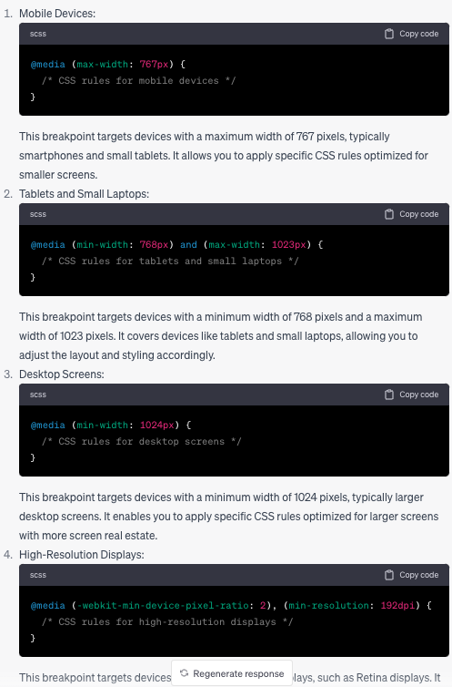

Responsive Design
responsive Design in CSS refers the practic of designing and developing webistre and web application that can adapt and respond to different screen sizes, orientation, and devices.
it is aimed to give optimal viewing across a wide range of devices, desktop computers, laptops, tablets, and mobile phones.
Some key principles and techniques.
-
Fluids Grids: using relative units (such as width: 20%;) and CSS grid system to create flexible and fluid layout which can adapt diffirent screen sizes.
-
Flexible Images and Media: scaling (change size of image while preserving its aspect ratio (3:1)) and resizing iamges and media elements (videos, embedded content) to fit in available space while maintaining the aspect ratio.
-
Media queries: apply css rules based on a specified device characgeristics.
-
Breaking points: defining the specific screen width in which the website needs to change to. it is often used together with Media Queries.

-
Responsive Typographhy: using CSS to ensure that text are readible in diffirent devices.
-
Mobile-first approach disigning and developing website to by keeping mobile devices first in mind.